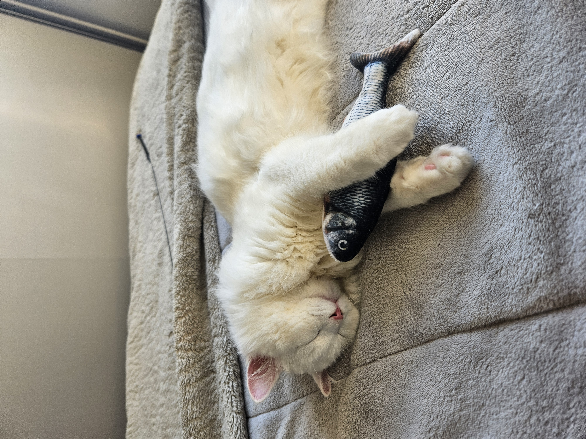
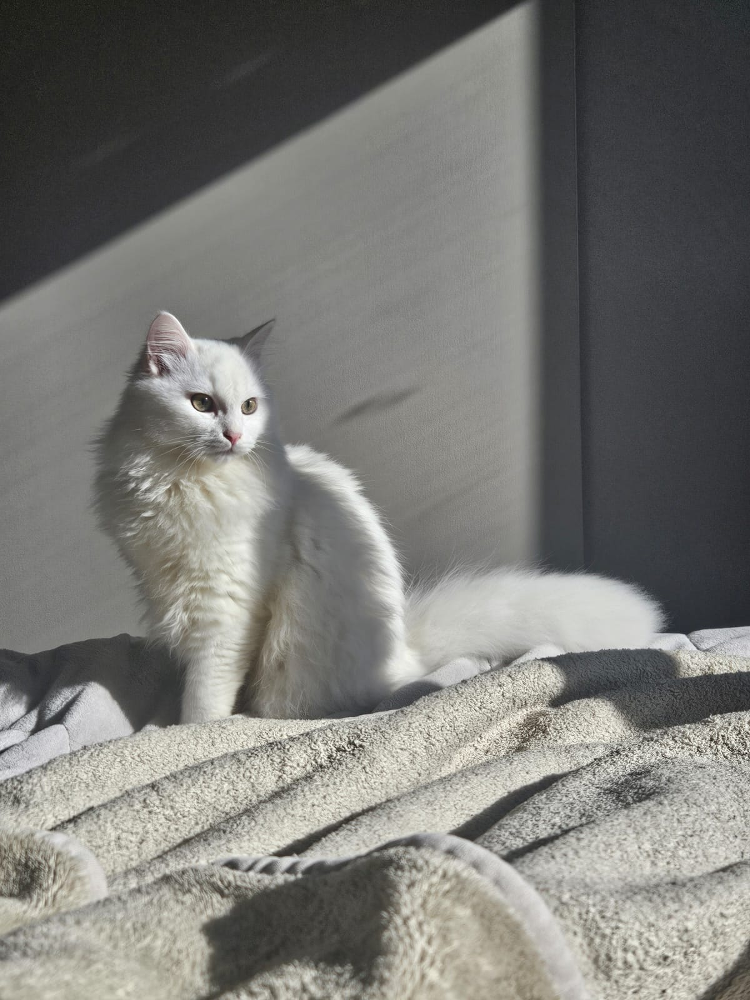
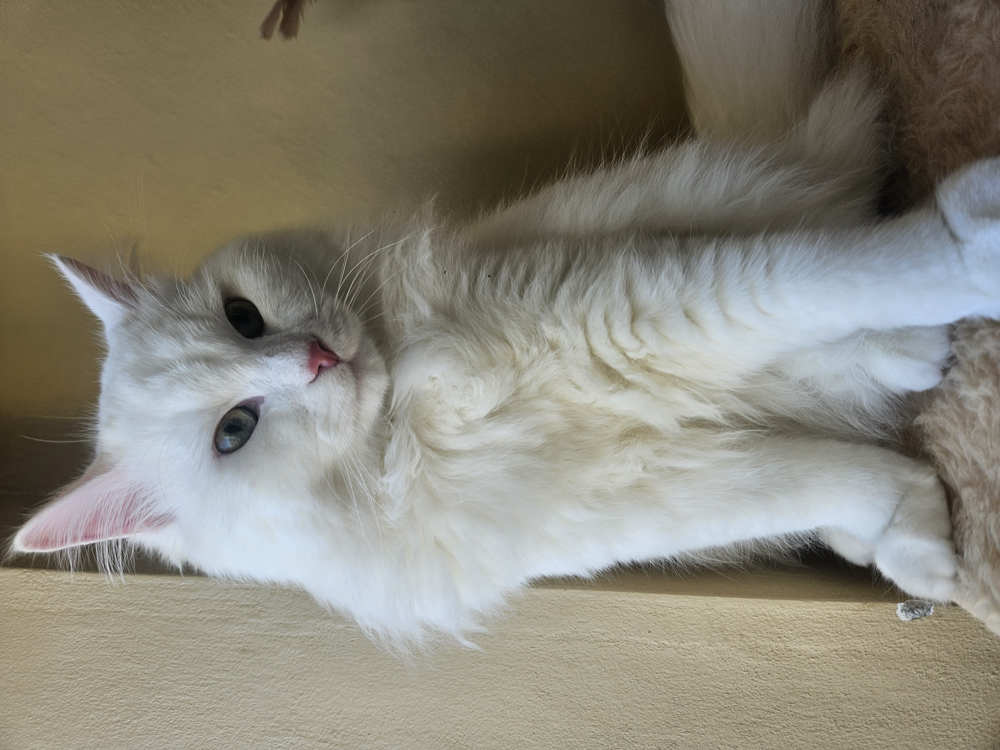
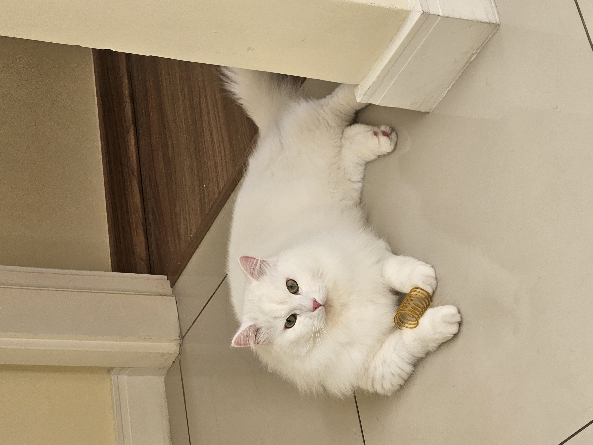
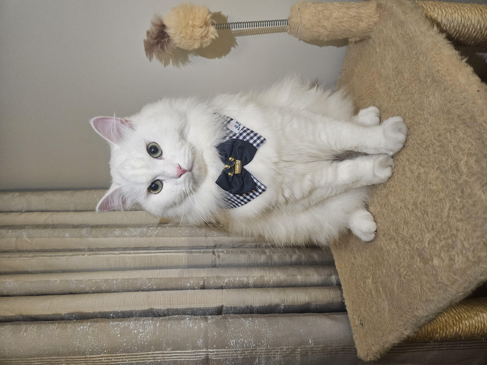

Uma raça majestosa, forte e cheia de história.
O gato Siberiano é uma raça doméstica com origens que remontam a séculos na Rússia, sendo considerada centenária. Embora sua presença seja antiga, o desenvolvimento formal da raça e a definição de padrões internacionais ocorreram apenas a partir do final da década de 1980. Acredita-se que o Siberiano tenha parentesco com o Bosque da Noruega, já que ambas as raças apresentam semelhanças físicas marcantes e evoluíram naturalmente para suportar climas extremamente frios. Sua pelagem densa e resistente é uma adaptação direta às rigorosas condições ambientais da região. Ao longo da história, os Siberianos desempenharam diversos papéis na Rússia. Foram desde gatos de quintal até companheiros extremamente valorizados pelas famílias. Além disso, marcaram presença no folclore e em contos populares, onde eram retratados como animais leais, protetores das crianças e até mesmo como figuras quase mágicas. Em algumas histórias infantis, eram descritos como guardiões capazes de abrir passagens para mundos além da percepção humana. Essa combinação de resistência, inteligência e personalidade afetuosa contribuiu para que o Siberiano se tornasse uma das raças mais admiradas em seu país de origem — e, mais recentemente, no mundo inteiro.
O gato Siberiano é uma raça de porte médio a grande, com estrutura corporal robusta e musculatura bem desenvolvida. Seu crescimento é mais lento quando comparado a outras raças, podendo levar até cinco anos para atingir a maturidade completa. O peito é largo, as pernas possuem ossatura forte e as patas traseiras são levemente mais longas que as dianteiras, o que proporciona maior impulso. Essa característica explica a impressionante habilidade dos Siberianos para realizar saltos altos e precisos. A pelagem é um dos traços mais marcantes da raça. O Siberiano apresenta três camadas naturais de pelo, que funcionam como proteção contra os climas rigorosos da Rússia. Essa estrutura garante isolamento térmico eficiente e, ao mesmo tempo, resulta em um manto resistente e relativamente fácil de manter. A textura é densa e macia, com brilho natural que reduz a formação de nós e o aspecto opaco. Quanto às cores e padrões, a raça apresenta grande variedade. São geneticamente possíveis padrões como malhado, sólido, carapaça de tartaruga e colorpoint. O Siberiano não possui uma coloração exclusiva ou incomum, e a maioria das organizações internacionais TICA e WCF reconhece essas variações como naturais. No entanto, os exemplares com padrão colorpoint costumam ser classificados separadamente dentro de algumas associações.





Nenhum gato pode ser considerado totalmente hipoalergênico. No entanto, existem indícios de que o Siberiano possa provocar reações alérgicas menos intensas em algumas pessoas quando comparado a outras raças. Essa possível diferença estaria relacionada a níveis mais baixos da proteína responsável pelas alergias — presente na saliva e na pele dos gatos. Ainda assim, as pesquisas sobre o tema continuam em andamento, e os cientistas seguem investigando esse fenômeno para compreender melhor seus efeitos.